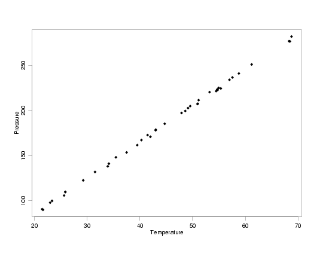
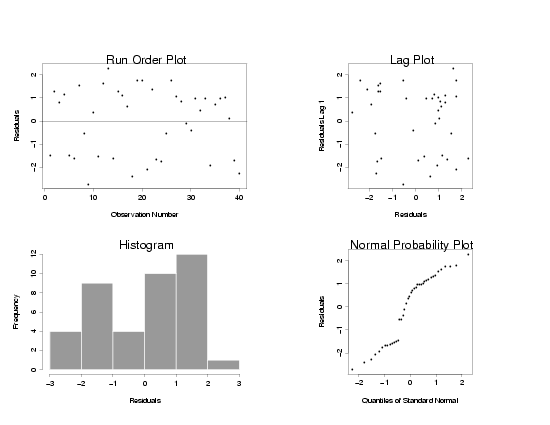
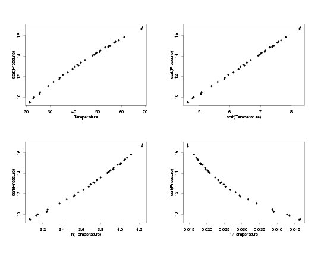
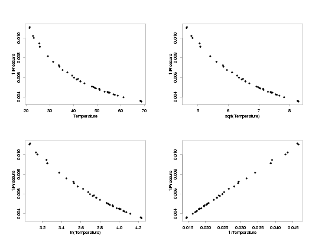
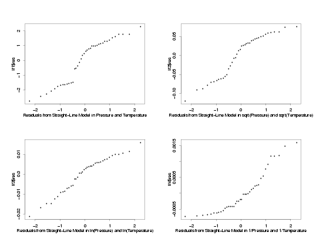
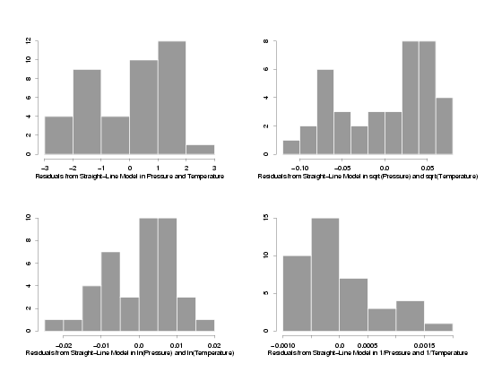

4.
Process Modeling
4.4.
Data Analysis for Process Modeling
4.4.5.
If my current model does not fit the data well, how can I improve it?
4.4.5.3.
|
Accounting for Errors with a Non-Normal Distribution
|
|
|
Basic Approach: Transformation
|
Unlike when correcting for non-constant variation in the random errors,
there is really only one basic approach to handling data with non-normal random errors for most
regression methods. This is because most methods rely on the
assumption of normality and the use of linear estimation
methods (like least squares) to make probabilistic inferences to answer scientific or
engineering questions. For methods that rely on normality of the data, direct manipulation of
the data to make the random errors approximately normal is usually the best way to try to bring
the data in line with this assumption. The main alternative to transformation is to use a
fitting criterion that directly takes the distribution of the random errors into account when
estimating the unknown parameters. Using these types of fitting criteria, such as
maximum likelihood, can provide very good
results. However, they are often much harder to use than the general fitting criteria used
in most process modeling methods.
|
|
Using Transformations
|
The basic steps for using transformations to handle data with non-normally distributed random
errors are essentially the same as those used to handle non-constant variation of the random
errors.
- Transform the response variable to make the distribution of the random errors approximately
normal.
- Transform the predictor variables, if necessary, to attain or restore a simple functional
form for the regression function.
- Fit and validate the model in the transformed variables.
- Transform the predicted values back into the original units using the inverse of the
transformation applied to the response variable.
The main difference between using transformations to account for non-constant variation and
non-normality of the random errors is that it is harder to directly see the effect of a
transformation on the distribution of the random errors. It is very often the case, however,
that non-normality and non-constant standard deviation of the random errors go together, and
that the same transformation will correct both problems at once. In practice,
therefore, if you choose a transformation to fix any non-constant variation in the data, you
will often also improve the normality of the random errors. If the data appear to have
non-normally distributed random errors, but do have a constant standard deviation, you can
always fit models to several sets of transformed data and then check to see which
transformation appears to produce the most normally distributed residuals.
|
|
Typical Transformations for Meeting Distributional Assumptions
|
Not surprisingly, three transformations that are often effective for making the distribution
of the random errors approximately normal are:
- \(\sqrt{y}\),
- \(\ln{(y)}\)
(note: the base of the logarithm does not really matter), and
- \(\frac{1}{y}\).
These are the same transformations often used for stabilizing the variation in the data. Other
appropriate transformations to improve the distributional properties of the random errors may be
suggested by scientific knowledge or selected using the data. However, these three
transformations are good ones to start with since they work well in so many situations.
|
|
Example
|
To illustrate how to use transformations to change the distribution of the random errors, we
will look at a modified version of the
Pressure/Temperature example in which the errors
are uniformly distributed. Comparing the results obtained from fitting the data in their
original units and under different transformations will directly illustrate the effects of
the transformations on the distribution of the random errors.
|
|
Modified Pressure/Temperature Data with Uniform Random Errors
|

|
|
Fit of Model to the Untransformed Data
|
A four-plot of the residuals obtained after fitting a straight-line model to the
Pressure/Temperature data with uniformly distributed random errors is shown below.
The histogram and normal probability plot on the bottom row of the four-plot are the most
useful plots for assessing the distribution of the residuals. In this case the histogram
suggests that the distribution is more rectangular than bell-shaped, indicating the
random errors a not likely to be normally distributed. The curvature in the normal probability
plot also suggests that the random errors are not normally distributed. If the random errors
were normally distributed the normal probability plots should be a fairly straight line.
Of course it wouldn't be perfectly straight, but smooth curvature or several points lying
far from the line are fairly strong indicators of non-normality.
|
|
Residuals from Straight-Line Model of Untransformed Data with Uniform Random Errors
|

|
|
Selection of Appropriate Transformations
|
Going through a set of steps similar to those used to find
transformations to stabilize the random variation, different pairs of transformations of
the response and predictor which have a simple functional form and will potentially have
more normally distributed residuals are chosen. In the multiplots below, all of the
possible combinations of basic transformations are applied to the temperature and pressure
to find the pairs which have simple functional forms. In this case, which is typical, the
the data with square root-square root, ln-ln, and inverse-inverse tranformations all
appear to follow a straight-line model. The next step will be to fit lines to each of these
sets of data and then to compare the residual plots to see whether any have random errors
which appear to be normally distributed.
|
|
sqrt(Pressure) vs Different Tranformations of Temperature
|

|
|
log(Pressure) vs Different Tranformations of Temperature
|

|
|
1/Pressure vs Different Tranformations of Temperature
|

|
|
Fit of Model to Transformed Variables
|
The normal probability plots and histograms below show the results of fitting straight-line
models to the three sets of transformed data. The results from the fit of the model to the
data in its original units are also shown for comparison. From the four normal probability
plots it looks like the model fit using the ln-ln transformations produces the most normally
distributed random errors. Because the normal probability plot for the ln-ln data is so
straight, it seems safe to conclude that taking the ln of the pressure makes the distribution
of the random errors approximately normal. The histograms seem to confirm this since the
histogram of the ln-ln data looks reasonably bell-shaped while the other histograms are not
particularly bell-shaped. Therefore, assuming the other residual plots also indicated that
a straight line model fit this transformed data, the use of ln-ln tranformations appears to
be appropriate for analysis of this data.
|
|
Residuals from the Fit to the Transformed Variables
|

|
|
Residuals from the Fit to the Transformed Variables
|

|


{kind=link}
{kind=link}
{kind=link}
{kind=link}
{kind=link}
{kind=link}